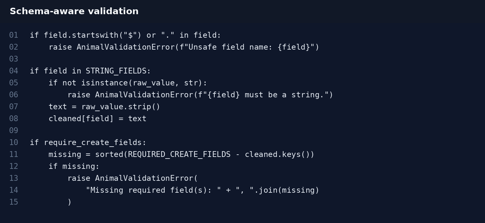
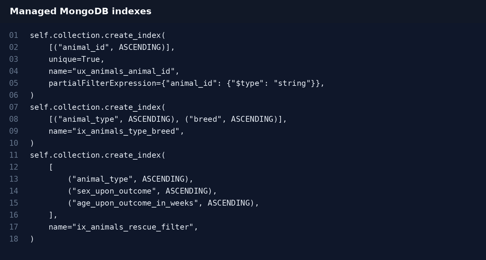
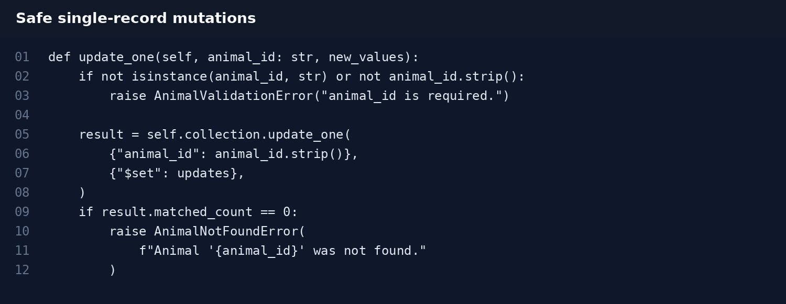
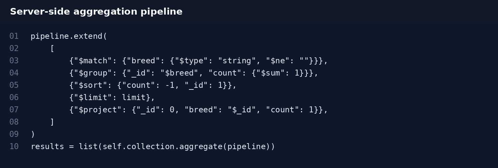
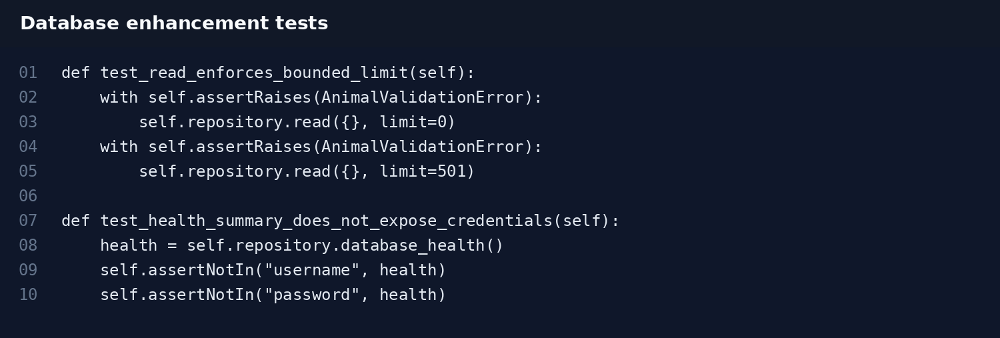

Schema-Aware Validation
Required identifiers are checked, strings are normalized, numeric fields are validated, and unsafe field names containing MongoDB operator syntax are rejected before data reaches the database.
The MongoDB repository was strengthened with schema-aware validation, managed indexes, safer single-record mutations, bounded reads, server-side aggregation, audit metadata, database-specific exceptions, and non-sensitive health reporting.
The Grazioso Salvare dashboard uses MongoDB as its persistent data layer and an AnimalShelter repository to separate database operations from the Dash interface. Because every table, chart, filter, and map view depends on shelter records, the database is a central part of the application rather than an isolated feature.
The final database enhancement focuses on data integrity, predictable behavior, query efficiency, security, and maintainability while preserving the client/server functionality developed in the original CS-340 artifact.
Required identifiers are checked, strings are normalized, numeric fields are validated, and unsafe field names containing MongoDB operator syntax are rejected before data reaches the database.
A unique partial index protects animal_id, while compound indexes support common breed and rescue-filter access patterns. The design explicitly recognizes the storage and write-cost trade-off of indexing.
Updates and deletes require one animal_id and operate on a single record, reducing the risk of accidental broad modification or deletion.
Read limits are constrained to a safe range, projections are supported, and sorting is limited to an allow-list of meaningful fields rather than accepting arbitrary sort requests.
Breed counts use MongoDB pipeline stages including match, group, sort, limit, and project, reducing unnecessary data transfer to Python.
Creates and updates receive UTC timestamps, and a non-sensitive health method reports database, collection, estimated record count, and index names without exposing credentials.
These examples highlight database changes from the actual Milestone Four enhanced artifact and provide visual evidence of the implementation.





This enhancement demonstrates MongoDB repository design, CRUD safety, query validation, indexing, aggregation pipelines, projections, audit metadata, exception design, testing, and secure handling of database information.
The strongest alignment is with Outcome Four through the practical use of MongoDB, PyMongo, validation, indexes, aggregation, logging, and automated tests, and Outcome Five through secure configuration, safer mutations, bounded access, validation, and non-sensitive health reporting. It also supports Outcome Three through explicit trade-offs involving indexes and database-side processing, and Outcome Two through documentation and visual presentation.
The database enhancement showed that reliability comes from enforcing rules at the repository boundary instead of assuming every caller will provide safe input. It also reinforced that optimization has trade-offs: indexes improve common reads but increase storage and write overhead, while server-side aggregation reduces transferred data but introduces database-specific logic that must be tested and documented.
The original CS-340 notebook and CRUD implementation.
Download original artifactThe cumulative project through the final Databases enhancement.
Download enhanced artifactThe Milestone Four Database enhancement narrative.
Download narrative